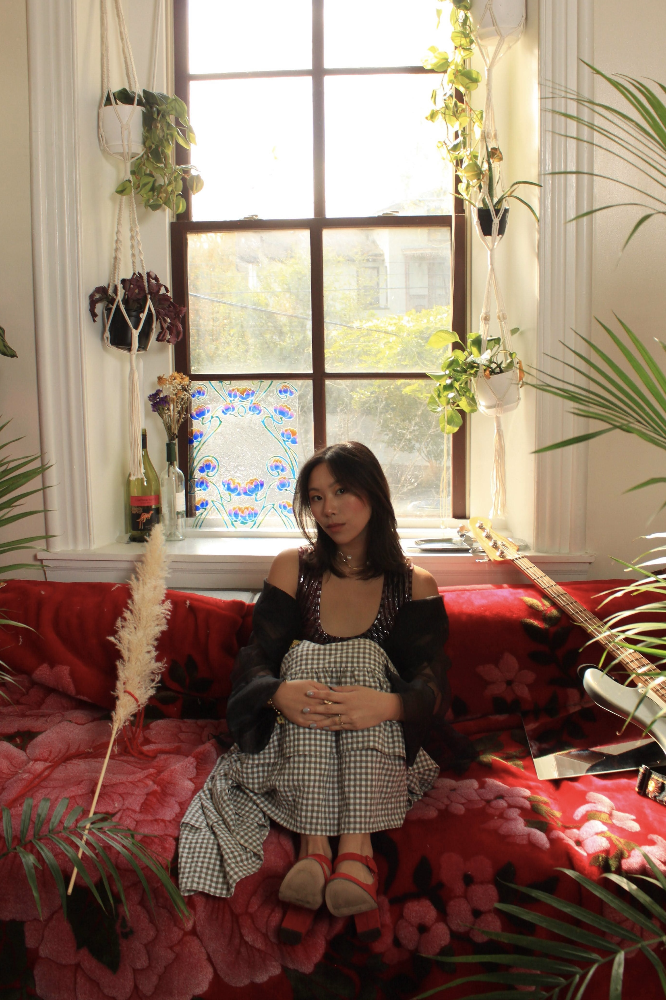

Hi, I'm Amanda — welcome to my corner of the internet!
I'm a visual storyteller exploring the intersection of art, culture, and human connection. Through photography, filmmaking, and ceramics, I love capturing the beauty in everyday moments and sharing my thoughts/feelings/observations with the world.
After graduating from the University of Pennsylvania with a degree in Finance and a minor in Fine Arts, I moved to Taiwan as a Fulbright English Teaching Assistant, where I've been building a creative practice rooted in curiosity and community. My projects span across documentary-style videos, travel and lifestyle photography, and ceramics.
Currently on a little journey seeking comfortable balance — a harmony between chasing my goals, learning, and enjoying time.
